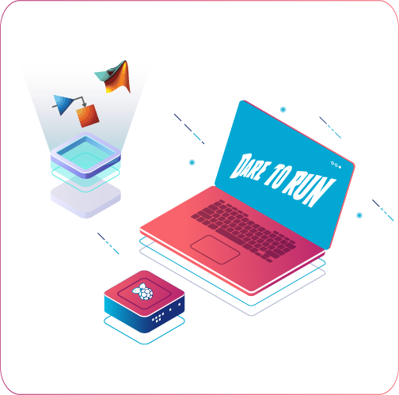

Inspired from DAREDEVIL the blind superhero, we propose DARE TO
RUN a guidance system that addresses the problem of autonomy of
visually impaired people.
This discreet, portable, and accessible technology
collects visible data through the camera,
analyses and processes it in order to find the direction that the
person should follow and
guides them through an audio output.
To enable faster processing, DARE TO RUN provides the user with
instantenous feedback to walk them through streets.
DARE TO RUN is not only an
affordable and efficient guidance system
for visually impaired people but an
eye-opening path for them to walk, run, live and be autonomous.
